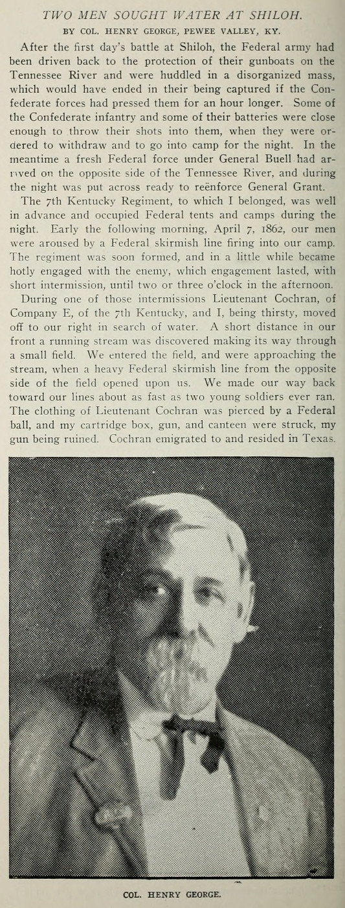

PHOTO ALBUM, THOMAS LINE

Llanbradach Fawr Manor Wales
Ancestral late 1500's gentry manor house of THOMAS family NW of Caerphilly, Wales. ?Possible DNA MATCH 2020 to descendant of
Welsh Quaker John (ca 1646-1725) and Barbara Aubrey Bevan. Barbara's mother was ELIZABETH THOMAS OF LLANBRADACH! 1 other Bevan cousin DNA MATCH.
John Bevan may have also had THOMAS of Llanbradach ancestors... Barbara Aubrey Bevan was probably cousin to Martha Aubrey who m. Reese THOMAS (ca 1663-1742)...
Theory that THOMAS of Llanbradach was a branch from David ap Jevan (Gen XI) MORGAN of Tredegar in the 1400's? ...
The Lord Rhys (1132–1197), Prince of South Wales
ROYAL LINE OF WALES, paternal descent from Rhodri Mawr, King of Wales, killed in battle by the English ca 878...
Maternal relation on THOMAS lines. His sister Nest married Ifor Bach (Lord of Senghenydd fl. 1158,
THOMAS of Llanbradach and LEWIS of Van ancestor).
Probable relations: ?Ellen and Nest (both through LEWIS of Van), sisters of Lord Rhys; Hywel Sais (his daughter and granddaughter m. MORGAN of Tredegar) and
Gwenllian (m. Ednyfed Fychan, ancestors of
Sir RHYS ap Thomas (and the Tudor Dynasty of England) ),
children of Lord Rhys.
Additional relation/descent (LLEWELYN of Rhydlavar, etc...) from Iestyn ap Gwrgant (1014-1093), Prince of
Glamorgan, who was maternally descended from Rhodri Mawr... Mother of Lord Rhys (ap Gruffydd) was Gwenllian ferch Gruffydd ap Cynan, paternally descended
from Rhodri Mawr.

Sir Rhys ap Thomas (1449–1525), Lord of southwest Wales
Flower of the Welsh chivalry. Pronounced Sir "REESE" ap Thomas?
The REESE family, THOMAS associates, were ?probably paternal descendants of David the Younger, a son of Sir Rhys ap Thomas...
Many DNA MATCHES on descendants
of Thomas REESE (ca 1671-1713)
and his father David REESE (ca 1650-1706), associates of ancestor Evan THOMAS of Llanycefn. REESE ancestor was probably Eliz, mother of 4th g grandfather Capt Wm THOMAS... Also numerous
DNA MATCHES to Moses BOWEN (b. Wales ca 1674 d. VA 1761) and wife Rebecca REESE, probably because of Rebecca being daughter of David REESE (ca 1650-1706)
and aunt to Henry REESE (son of Thomas and Margaret Bowen REESE, m. Martha THOMAS 1758 daughter of ancestor Evan THOMAS of Hopewell)...
One of the REESE DNA MATCHES looks to be to a descendant of Rev David Tasker REESE (1708-1787), previously not known to be actually of this family.
Capt James Polk REESE (b. 1744 Cecil Co MD d. 1828 Maury Co TN) of the old THOMAS neighborhood in Maury Co was a son. James Polk REESE buried at REESE Chapel along with his
(Brevard) "kinsman" Isaac Jetton THOMAS (1781-1844) whose 1823 Federal style house "Montrose" is nearby. Additional notable son of cousin Isaac J. THOMAS: https://en.wikipedia.org/wiki/John_Addison_Thomas.
It seems possible that the REESE line is the most influential genetically on great grandfather James CLARK?

Dinefwr Castle, Llandeilo Carmarthenshire, Wales
Site used by The Lord Rhys, rebuilt by his son, then by Sir Rhys ap Thomas late 1400's.
/
Carew Castle, Pembrokeshire Wales
The Norman castle has its origins in a stone keep built by Gerald de Windsor around the year 1100.
His descendants the Carews then added to it, as did Sir Rhys ap Thomas late 1400's & early 1500's. Reverted back to the
Carew family 1600's (Sir John Carew and his son George). Thomas THOMAS Esquire (brother of ?ancestor Richard THOMAS
of Pembrokeshire(b. ca 1600 d. bef. 1670)) of Llanbradach married
Sir John's daughter Dorothy (b. 1604 d. 1678 Rhydlavar Glamorgan).
LEWIS of Van Mansion, Caerphilly Wales
Descendants of this gentry family were Quakers from Glamorgan and Pembroke Wales and strong associates of
the THOMAS and REES families in Wales and America... 2 DNA MATCHES to Ralph LEWIS (ca 1640-1712) of Glamorgan Wales and PA, brother of David (LEWIS David?) and Wm LEWIS of Wales/PA!
Ancestor could be related Jane LEWIS, ?wife of Richard THOMAS (ca 1600-bef 1670) of Llanbradach and Pembroke Wales. Or the mother of David REESE (ca 1650-1706), said to be descended from LEWIS of Van.

Llwyngwair Manor, near Nevern, Pembrokeshire Wales
Seat of BOWEN of Llwyngwair/PentreEvan from 1500's. Jane BOWEN of Llwyngwair m. Philip Bowen of Llanycefn
and is thought to be probable maternal grandmother of ancestor Evan THOMAS (b. ca 1650) of Llanycefn.

Sir Henry Morgan the Pirate (1635-1688)
?Maternal cousin, descendant of a branch of prominent MORGAN of Tredegar family south Wales. THOMAS of Llanbradach had 2 marriages
with this family on their pedigree, 1 in the 1400's with the main line, the other late 1500's with a branch (paternal
grandmother of ancestor Richard THOMAS of Llanbradach/Pembroke m. his grandfather John THOMAS)... ?MORGAN of Tredegar DNA MATCHES,
including possibly some from American pioneer Morgan MORGAN (b. Glamorgan Wales 1688 d. Bunker Hill W VA 1766, educated Cambridge Univ England)
https://en.wikipedia.org/wiki/Morgan_Morgan...
Treverigg Quaker Meeting, north of Llantrisant Glamorgan Wales
Hosted by John and Barbara Aubrey Bevan. His mother-in-law was Elizabeth THOMAS Aubrey, daughter of
Thomas THOMAS Esquire of Llanbradach and Rhydlavar Glamorgan and Dorothy, daughter of Sir John Carew. Among 1683
attendees of meeting upon departure of the Bevans to America with probable? identification were: James THOMAS
(of Llanboidy Carmarthen Wales/Merion PA, ?grandson of ancestor Richard THOMAS of Llanbradach/Pembroke/brother of
Thomas THOMAS Esquire); William THOMAS (of Machynlleth/Llanddewi Velfre Pembroke Wales/Radnor PA, ?son of
Richard THOMAS of Llanbradach/Pembroke); Howell THOMAS (?of Llawhaden Pembroke Wales in 1675 baptism of son Richard,
?married Mabel Prichard of Ynis-Arwid Glamorgan,?grandson of Richard THOMAS of Llanbradach/Pembroke);
Watkin THOMAS of Llanbradach (brother of Elizabeth THOMAS Aubrey); William (of Eglwysilan Glamorgan) and brother
Ralph LEWIS, ?descendants of LEWIS of Van... Attendees (previously mentioned) of 1694 meeting upon removal of
William LEWIS and family to America: Watkin and brother Rowland (d. 1696?) THOMAS of Llanbradach, Howell THOMAS
and John Bevan... December 1697 meeting for John and Barbara Bevan, attendees: Watkin (d. 1700?) and Howell THOMAS
and James LEWIS (of Llanddewi Velfre Pembroke, son of Lewis David of Llanddewi Velfre/PA/aka David LEWIS ?brother of
William and Ralph)...

Old Haverford Friends Meeting House, PA
Welsh Quakers founded near Philadelphia 1684, log church built 1688, stone church built 1700. Land donated by William Howell, attended by ancestor Evan THOMAS
of Hopewell VA, Rees THOMAS (m. Martha Aubrey "at Haverford" 4/18/1692, witnesses John and Barbara Bevan, William Howell... ), William Penn November 1699, William THOMAS (uncle of Rees, d. 1689) 1688, ancestor Thomas
REESE (m. Rebecca "at Haverford" 1692, witnesses Lewis THOMAS, James and Margaret (Howell) THOMAS, Elinor (m. Daniel) THOMAS and John Bevan)...
1696 marriage "at Haverford":
witnesses Ralph, William and David LEWIS (?son of LEWIS David), Daniel and Elinor THOMAS... 1696 "at Haverford" Joseph Richardson m. Elizabeth Bevan dau of
John and Barbara [Aubrey]
Bevan (Elizabeth is ancestor of 2 DNA matches in Llanbradach Fawr caption above), witnesses Daniel, Rees and Martha [Aubrey] THOMAS, John Bevan... 1697 "at Haverford"
marriage of Ann Bevan (dau of John), witnesses John and Barbara [Aubrey] Bevan, Rees and Martha [Aubrey] THOMAS, Ralph LEWIS, Abell, Elinor and Owen (son of James)
THOMAS... 1687 marriage of Daniel THOMAS and Eleanor Vaughn signed "at Haverford" by James [of Merion] THOMAS and Gwen (?sister of Daniel) THOMAS, LEWIS David, Francis Price...
Haverford burials: James THOMAS (of Llanboidy/Merion) 1699, his son Thomas THOMAS 1690, Israel Wistar MORRIS 1870...
Rowland Powell m. 1695, HAVERFORD PA, Maud Richard - present REES THOMAS ("Well descended from a good family.", whose father
John was named as relation of Eliz THOMAS of Llanbradach, m. Martha Aubrey), ancestor EVAN THOMAS (of Hopewell VA), Wm HOWELL,
ancestor Mary [HUSBAND THOMAS] HOWELL, John & Barbara [Aubrey, her mother was Eliz THOMAS of Llanbradach] BEVAN, Philip PRICE, Morris Llewellyn, LEWIS DAVID, ancestor David REES, Eliz Rees, John Jerman, David LEWIS,
Hannah HOWELL [1689-d. 1758 Kennett Square PA, became Quaker Minister, dau of Wm]...

Hopewell Friends Meeting House, Frederick Co VA
THOMAS and REES families came to America 1682 as Welsh Quakers and moved to northern VA early 1700's, where they attended this church.
DNA Ancestry MATCH 2020 (17cM 1 segment) ! Mutual descent from early Pennsylvania Quakers, either Mary HUSBAND (1661-1710) or (probably) Andrew JOB (1650-1722)! From a descendant of Wm HOWELL, 2nd husband of Mary.
Also, Eliz Prothero (b. ca 1664, dau of Evan and Eliz THOMAS Prothero) on her family tree... 2nd substantial DNA match to descendant of Andrew JOB and his son Caleb (of Rileyville VA area near Bentonville) makes JOB the likely common ancestor.
Speculate that John THOMAS of Hopewell VA (d. 1781 NC), grandfather of ancestor Capt Wm THOMAS, married a daughter of Andrew JOB. This match also claims descent from David REESE (ca 1655-1706), associate of probable ancestor Evan THOMAS of Llanycefn Wales. Also Ephraim LEITH (1725-86) of
Bentonville VA area (associate of Capt Wm THOMAS) on her tree... Makes the daughter of Andrew JOB the likely mother of JOB THOMAS (b. 1730) of Royal Oaks Plantation VA...
Match to 3rd JOB descendant... "William Penn, with his intimate friend Andrew Job, a man of education and influence, ..."...
! DNA MATCH (20 cM 1 segment) to descendant of Enos THOMAS, son of Evan THOMAS (ca 1681-1755) of Hopewell VA, brother of ancestor John, which probably proves the THOMAS bloodline...
Note that mother-in-law of Enos THOMAS was said to be a Livesey of the SE PA family that was heavily intermarried with the Daniel THOMAS (b. 1678, elder son of Evan THOMAS of Llanycefn, brother of ancestor Evan THOMAS of Hopewell VA) family...
It appears that both fathers of 6th g grandparents John and ? JOB THOMAS were educated in England (Evan THOMAS and Andrew JOB)...
Branson/Evan Thomas Sr House, Clear Brook VA
From Frederick Co VA Rural Landmarks Survey: "One of the oldest houses in the
county, the Branson House is one of a series of dwellings
constructed by Quakers who came to the area in the 1730s.
Architecturally it is the least altered of these buildings ..." The left double bay portion is original, built by ancestor
Evan THOMAS Sr (ca 1681-1755) ca 1750 on Route 11 north of Clear Brook... 2 DNA MATCHES with descendants of Daniel THOMAS (b. 1678 Pembroke Wales) of Abington PA and son MORRIS. Daniel's brother
was Evan THOMAS Sr of Clear Brook/Hopewell, sons of Evan THOMAS (ca 1650-1685) of Llanycefn Pembroke Wales and Haverford PA...
A couple of DNA MATCHES to
Hannah HOWELL (1689-1758, daughter of William and Mary Husband THOMAS Howell, m. Robert Roberts) 1/2 sister of ancestor Evan THOMAS of Hopewell VA. William Howell was 1st
Justice of Peace of Haverford PA, elected to replace John Blunston in the Pennsylvania Provincial Assembly ?1690 or 1699 and Constable of Haverford 1698-9. The
other daughter of Wm and Mary Husband THOMAS Howell was Deborah Howell (1691-1759) who m. 1713 George Boone IV (1690-1753), uncle of American
pioneer legend Daniel BOONE (1734-1820)... 2 DNA MATCHES to Deborah Howell and George Boone IV...

Isaac Hite Jr of Belle Grove Plantation Virginia
His father, Isaac Hite Sr of Long Meadow Plantation, had business dealings with Capt Wm THOMAS of Bentonville, VA.
Israel Wistar Morris (1778-1870)
Of one of Philadelphia's most prominent families, m. Mary Hollingsworth, son of Capt Samuel MORRIS of Am Rev. His uncle, Israel MORRIS, was cousin? of
ancestor William THOMAS at Bentonville VA early 1770's... 4 DNA MATCHES to descendants of patriarch of this clan,
Anthony 'The Brewer' MORRIS (1654-1721, Mayor of Philadelphia)! ?Ancestor would be 1st wife of Evan THOMAS (ca 1681-1755) of Hopewell VA.
Israel Wistar MORRIS buried Old Haverford Friends Burial Ground, PA.
Doublehead, Cherokee Indian Chief
He killed, scalped and cannibilized Capt Wm Overall (?brother-in-law of ancestor Capt Wm THOMAS) 1793 on trace south of Mammoth Cave between Nashville and "Kentuck".
Nathaniel OVERALL Cabin, ca 1804-10 Rutherford Co TN E of Lascassas
Nathaniel Overall m. Anne THOMAS (ca 1767-1847, "a Quaker", ?sister of 4th g grandfather Capt Wm THOMAS) 1783 Nashville. DNA test match with OVERALL family confirms and proves link to OVERALLS and that Capt Wm THOMAS of Woodford Co KY and Rutherford Co TN connections,
Wm THOMAS of Maury Co TN (ca 1751-1844) and "Honest" Billy THOMAS of Bentonville VA near Overall are 1 and the same...
DNA MATCH to descendant of Sarah THOMAS Hutchinson (b. ca 1771 VA), daughter of Capt Wm THOMAS. Match also descends from son of Sarah and James, NATHANIEL OVERALL Hutchinson (b. 1803 Montgomery Co TN d. 1865 Ballard Co KY). Tree lists ancestor Evan THOMAS of Hopewell...
From Hist. of Page Co VA: Overalls descendants of Bishop John Overall, one of the
forty-eight translators of the King James Bible and a court preacher to Queen
Elizabeth. His cathedral still stands. https://en.wikipedia.org/wiki/John_Overall_(bishop)
https://wc.rootsweb.com/trees/595717/I81653/john-overall/descendancy

General Felix K. Zollicoffer CSA 1859
Neighbor of the Thomases in southern Maury Co TN and member of 1831 militia company with them.

President James K. Polk and wife Sarah Childress
DNA test results 2020 show link to descendant (from sister of Isaac Jetton THOMAS in N MS) of Jacob THOMAS (b. ca 1727, ?Welsh Quaker, of NC, m. Margaret Brevard).
His descendant James Houston THOMAS (1808-1876) was USA/CSA Congressman and law partner of President James K. Polk 1843 Columbia TN (see Correspondence of James K. Polk 1846).
This may confirm original hypothesis that 4th g grandfather Capt Wm THOMAS, James Houston THOMAS and his father Isaac Jetton THOMAS were neighbors and also cousins in southern Maury Co TN early 19th century.
Jacob THOMAS would probably be a brother of Capt Wm THOMAS' father or maybe a descendant of James THOMAS of Merion PA/Llanboidy Wales, another relative (see THOMAS notes cont)...
Other descendant (grandson) of Jacob and Margaret Brevard THOMAS: David THOMAS (b. 1795 TN d. TX 1836), lawyer, signer of the
Texas Declaration of Independence, friend of Sam Houston https://www.tsl.texas.gov/exhibits/navy/dav_thomas_apr4_1836_1.html;
https://en.wikipedia.org/wiki/David_Thomas_(Texas_politician). Mother desc from Col John Purviance b. 1743 Lancaster Co PA.
From Men Who Made Texas Free: "The sudden taking away of David Thomas was a great shock to us all.
He was held in highest personal regard by all who knew him. He was a
most charming companion, a talented diplomat, a polished scholar, a
learned lawyer, a brave and loyal patriot. He left a record for valor that
will live for all time."...
Nimrod Porter (ca 1790-1871)
Long time antebellum Sheriff of Maury Co TN ca 1820-1840's, his house and original log cabin (ca 1820's) still stand south of
Columbia, TN. His deputy was ?maternal cousin Caleb THOMAS, ?brother of Colonel Jonas E. THOMAS. Kept a diary 1861-1871.

Miss Jane H. Thomas
Maternal Cousin. Great granddaughter of Job THOMAS of Royal Oaks Plantation Cumberland Co VA,
19th century Nashville TN socialite, and author of "Old Days in Nashville Tenn. Reminiscences".

Captain Joe Emerson, Co E 3rd KY Inf CSA
"The ideal man", still photo may not do him justice. Maternal cousin, his paternal grandmother was a THOMAS
(Elizabeth, link to Capt Wm THOMAS confirmed by DNA test match 2020). Born southern Maury Co TN, killed Shiloh TN 1862. Lawyer 1860 Mayfield KY.
Judge William Augustus Thomas of Frankfort KY
1863-1951. Chief Justice of highest state court in Kentucky for a few years ca 1930, Mayfield KY Lawyer late 19th century.
Raised northern Weakley Co TN with 1st cousin Buck CLARK (great grandfather). Maternal cousin.

Colonel Henry George
Neighbor of the Thomases and Emersons in southern Graves Co KY before Civil War,
wrote short bio of Capt Joe Emerson and was commandant of Confederate Home Pewee Valley KY.
Plantation Home of great grandson of Mareen DUVALL near Davidsonville, MD
Built late 1700's-early 1800's near the site of French Huguenot ancestor (confirmed by DNA test match 2020) Mareen Duvall's home "Middle Plantation".
Mareen Duvall moved America ca 1650 and was ancestor of 3rd great grandfather Marine Duvall THOMAS...
Also confirmation by numerous DNA matches of descent from Mareen DUVALL descendants and 5th g grandparents, who were cousins, Cornelius (1736-1807) and Keziah
DUVALL DUVALL of Scott Co KY...
Betty Duvall
Maternal Cousin, descendant of French Huguenot ancestor Marine Duvall.
Confederate spy of Washington DC area.
Judge Gabriel Duvall
US Supreme Court Justice and descendant of ancestor Marine Duvall.
Nicholas Henry Dawson
Grand nephew of Molly Dawson THOMAS (married Richard, brother of 3rd great grandfather
Marine Duvall THOMAS). He was killed, scalped and mutilated July 1870 by Comanche Indians on Morris Branch east of
Decatur, Wise Co Texas. Confederate veteran, Company C 16th Texas Cavalry CSA. Mattie Curtner Clark (d. Bowie TX 1965), maternal great grandmother and
wife of Buck Clark, was born in Wise Co TX 1870.

John Simpson Chisum, Texas and New Mexico Cattle Baron
Son of Claiborne Chisum who was a close friend of Richard THOMAS (m. Molly Dawson),
older half brother of 3rd g grandfather Marine Duvall THOMAS (confirmed by DNA test match 2020).
Claiborne witnessed the will of Richard THOMAS ca 1842 Paris, Texas.
Clara THOMAS (1841-1914) of Llwyn Madoc, Llanbradach & Pencerrig, Wales
About the last of the THOMAS of Llanbradachs (Generation XXVI) on G.T. Clark's pedigree.
Actually, she was a THOMAS of Llanbradach only on her mother's side, & Thomas of Llwyn Madoc
on the father's side. She displayed on her Coat of Arms THOMAS of Llwyn Madoc & Llanbradach,
Llewelyn of Rhydlavar, Carew, etc... Annual income of £40,000 ca the time of her will,
& owned 14,000+ acres in 'Great Landowners of Wales 1873'.

Sarah Elizabeth Hutchison Blane (1851-1956, TN) on her 100th Birthday
GG granddaughter of ancestor Capt William THOMAS by his daughter Sarah Eliz THOMAS Hutchison of Montgomery Co TN.
Looks like she could be on the THOMAS genetic line. Buried N of Dover TN on Cumberland River.

Nathan Boone (1781-1856)
Son of Daniel Boone, Mareen DUVALL (ca 1775-1844) ?brother of 4th g grandmother ? DUVALL THOMAS accompanied him and his father Oct 1796
on "woods excursion" to E KY?

Lord Godfrey MORGAN of Tredegar, 1st Viscount (1831-1913)
Classic Welsh Gentleman, probably very distant maternal cousin related to THOMASes.
Captain of 17th Lancers, Charge of the Light Brigade, at Battle of Balaclava "Valley of Death" 1854. Bears some resemblance to great grandfather
James CLARK who was genetically on the Welsh gentry THOMAS line of his mother.

Sir David Mathew of Llandaff, Glamorgan Wales (1400–1484)
Lord of Llandaff, and 1 of the 10 Great Barons of Glamorgan, a Marcher Lord. "...he was one of the most
distinguished men of his age". Married daughter of Sir George Herbert, granddaughter Janet Mathew married Sir Rhys ap Thomas, was killed by the Turberville family of Coity Castle... Probable maternal ancestor,
and ancestor of Mathew of Sweldon (descended from son of Sir David, Thomas Mathew of Radyr, father of Janet).
The maternal grandmother of ancestor Richard THOMAS of Llanbradach/Pembroke (b. ca 1600) was Jane MATHEW (Llewellyn) of Sweldon...
Sir Rhys ap Thomas was brother-in-law of Sir William MATHEW of Radyr (Glamorgan Wales d. 1528, knighted Bosworth Field 1485, grandson of Sir David MATHEW of Llandaff),
was probable maternal ancestor on THOMAS line.
Sir Rhys ap Thomas married his sister Jenet MATHEW (ca 1455-1533, d. Picton Castle Pembroke). Could also be a blood relation through his sister
Margaret ferch Thomas who m. (2) John Hearle, Esq., and whose daughter Mary m. ca 1500 ?possible ancestor Sir James BOWEN of Llwyngwair Pembroke.

Llancaiach Fawr Tudor Manor House, Nelson Wales
PRICHARD of Llancaiach of this manor were a branch of LEWIS of Van, descending from Richard ap Lewis ap Richard Gwyn. Richard was brother to ancestor
Ann LEWIS who m. Thomas ap Jevan of Llanbradach in the 1500's. Ann and Thomas' grandson John THOMAS of Llanbradach m. Mary MORGAN of Penllwyn Sarth (descended
from MORGAN of Tredegar). As a
widow, ancestor Mary MORGAN THOMAS m. Edward Prichard of Llancaiach, Sheriff of Glamorgan 1599, his 3rd wife. They would have lived here ca early 1600's?